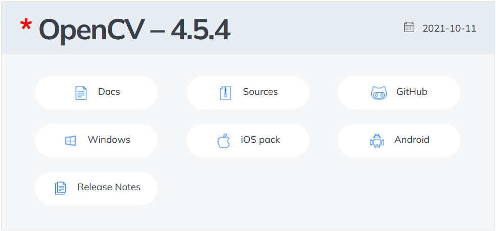
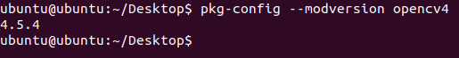
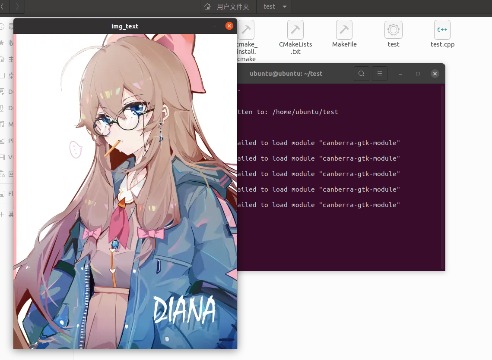

第一章 开始OpenCV
写在前面的话
OpenCV是计算机视觉中经典的专用库，其支持多语言、跨平台，功能强大。
但市面上的OpenCV文档以OpenCV-Python为主流，难以满足我所参加的比赛需求，所以决定在这里写下这篇基于C++的OpenCV文档。
文档大量参考前人留下的资料，包括但不仅限于：
- OpenCV-Python Tutorials官方文档：https://docs.opencv.org/4.5.4/index.html
- OpenCV中文官方文档：http://woshicver.com/
希望能对大家的学习产生一点帮助。
编写过程难免有所疏漏，如果发生错误，希望大家指出，谢谢支持。
OpenCV的安装与使用
Linux
教程版本
- Ubuntu 64位 20.04
- OpenCV 4.5.4
这里的版本都是教程编写时最新的稳定版本，也是教程后面会用到的版本。
安装
- 安装所需环境和依赖
1 | sudo apt-get install cmake libgtk2.0-dev pkg-config libavcodec-dev libavformat-dev libswscale-dev |
- 下载OpenCV源码
下载地址：下载地址：https://opencv.org/releases/
点击Sources进行下载，注意选择自己需要的版本。
这里注意，我个人更喜欢追随更新使用较新的版本，但很多开源项目都基于旧版的OpenCV3甚至更早的版本，在进行开源项目学习的时候，很可能需要大家去下载和使用较早的版本。在写这个教程的时候已经听到了一些OpenCV5的消息。

- 解压
下载的压缩包通常会出现在Downloads目录下，把它解压到合适的位置，这里我们选择解压到默认用户主目录下。
1 | unzip -d ~ opencv-4.5.4.zip |
- 安装
移动到解压目录下，进行编译
1 | cd opencv-4.5.4 |
cmake选项还有很多，这里只调整了比较常用的，更多的可以去官方文档查看。
编译时间比较长，耐心等待。
- 安装
1 | sudo make install |
因为我们所安装的目录需要root权限，所以要在make命令前加sudo，以获取root权限。
- 配置OpenCV环境
想要在C++程序中使用opencv需要为程序指定头文件位置，这里我们使用pkg-config命令来完成。
进入/etc/profile配置文件
1 | sudo vim /etc/profile |
在文件末尾追加添加以下命令：
1 | export PKG_CONFIG_PATH=$PKG_CONFIG_PATH:/usr/local/lib/pkgconfig |
添加完之后使用命令行更新配置文件
1 | source /etc/profile |
查看版本号，验证是否安装成功
1 | pkg-config --modversion opencv4 |

到这里，如何你成功看到了opencv版本号，我们的安装就基本完成了
测试
选择合适的位置进行如下操作
1 | mkdir test |
编写文件内容
test.cpp
1 |
|
CMakeLists.txt
1 | cmake_minimum_required(VERSION 2.8) |
并且在这个文件夹下放一张图片，命名为1.jpg
然后执行如下操作
1 | cmake . |

如果看到你的1.jpg以窗口的形式弹出，就说明你的opencv安装成功了。
使用
- 推荐使用Qt
因为我们这不是一个Qt使用教程，关于Qt的下载和安装，我们不过多赘述。我只是懒，说不定有一天会补上的。
教程后面将使用Qt进行教学，版本为5.14.2。不用最新版是因为Qt5.15开始付费了。
这里只放一个.pro文件的写法方便大家复制。
1 | TEMPLATE = app |
Windows
本教程基于Linux，Windows系统下的安装只做简单介绍，方便大家使用。
教程版本
- Windows 10
- OpenCV 4.5.4
鸽了，有空补上。